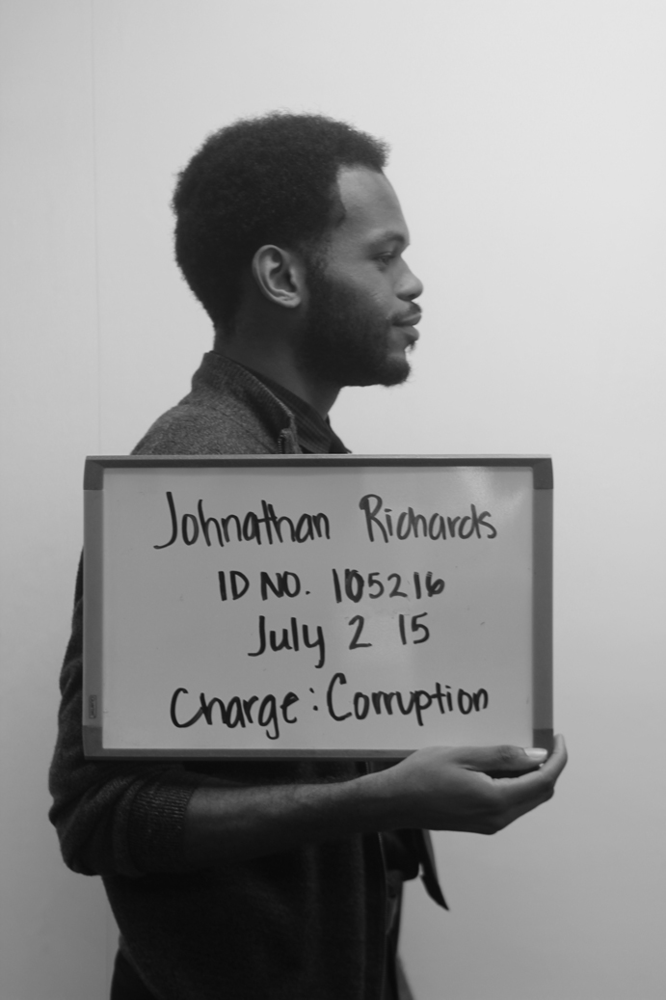

Johnathan Richards
I am a motivated IT technician in training, dedicated to my work and studies. I am 23 years old with a great work ethic and a general tact to any duties that I'am assigned . Currently I'm pursuing my associates in Information Technology at Harold Washington College. I feel that this step will better develop my brand, and make me a more marketable employee. I'am a former student at Eastern Illinois University where I majored in Sociology with a minor in Psychology. I plan to return to Eastern to finish my education but until then I use my time to volunteer with non for profits to develop my understanding of society, and social problems. I take every opportunity to learn and develop my brand. My ideals push me to continue with my education.